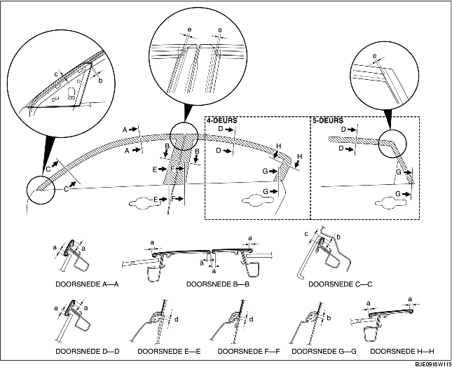

1. Verwijder vet en verontreinigingen van het contactvlak op het portier.
2. Snijd het ongebruikte deel af langs de stippellijn.
3. Verwijder de laag aan de achterzijde en plaats de afdekfolie op de aangegeven wijze op het portier.

4. Verwijder de doorzichtige laag van de afdekfolie van de ruitgeleider.